Chapter 1: Networking Foundations¶
Before learning any protocol or device, you need the big picture: what a network is, how devices are arranged, how we measure speed, and the layered models every engineer uses to think about traffic. This chapter builds that foundation from zero, with plenty of analogies and worked examples. By the end you will be able to follow, step by step, what really happens when you type a web address into your browser.
1.1 What Is a Computer Network?¶
A computer network is two or more devices connected so they can exchange information and share things like files, printers and an internet connection. Each connected device is called a node, and the path between nodes (a cable or a radio signal) is called a link. Networks come in different sizes, from the few gadgets around your body to the whole planet-wide Internet.
Think of it like…
A network is like a road system: houses (nodes) are joined by roads (links), and the size can be a private driveway, a town, a country or the whole world's motorways.
Real-world example
Maya owns a small bakery with two laptops, a receipt printer and a card terminal. A Wi-Fi router joins them into one local network, so both laptops print to the same printer and share one broadband line. Her phone pairs with wireless earbuds over Bluetooth, a tiny personal network. When she checks her supplier's website, her traffic leaves the bakery's LAN, crosses her provider's wide area network and travels across the Internet.
How it works¶
- Devices (nodes) such as PCs, phones, printers and servers each get a network interface (a Wi-Fi chip or Ethernet port).
- Links (copper cables, fibre optics or radio waves) physically connect the nodes.
- Network devices like switches and routers direct traffic between nodes and between networks.
- Shared rules called protocols make sure every device formats and understands messages the same way.
- Networks are classified by size and purpose: PAN, LAN, WLAN, CAN, MAN, WAN, SAN and more.
Who uses it
Everyone uses networks daily; network technicians, administrators, cloud and security engineers build and protect them for homes, schools, hospitals, banks and data centres.
Key takeaway
Memorise the size order PAN < LAN < CAN < MAN < WAN, and remember the Internet is a 'network of networks', not one single network.
Going deeper
- Cisco's classic breakdown has four building blocks: end devices (hosts), intermediary devices (switches, routers, access points, firewalls), media (copper, fibre, radio) and the services or protocols that run over them.
- Network types are defined mainly by scope and ownership, not exact metres: a LAN is owned and run by you, while WAN links are usually leased from carriers that own the cables and spectrum.
- Every network device works on three planes: the data plane forwards user traffic, the control plane builds tables (routing, MAC, ARP), and the management plane is how admins configure it via SSH, SNMP or APIs.
- The Internet is huge: tens of thousands of autonomous systems (independently run networks) exchange around a million IPv4 routes using BGP, with no central owner or off switch.
- Modern networks are converged: one IP network carries data, voice, video, CCTV and building controls, so quality-of-service rules prioritise delay-sensitive traffic like calls over bulk downloads.
- Storage networks are specialised LANs: Fibre Channel SANs run at 32 or 64 Gb/s with their own switches, while iSCSI and NVMe over Fabrics carry storage across ordinary Ethernet.
Common mistakes & misconceptions
- Calling the Web and the Internet the same thing: the Web (HTTP) is one service running on the Internet, alongside email, DNS, gaming and VoIP.
- Treating WLAN as a separate size category: a WLAN is simply a LAN whose devices connect by radio instead of cable.
- Memorising fixed distance limits for LAN, MAN or WAN: there are no official metre boundaries; scope and ownership decide the label.
- Believing a VPN makes you anonymous: it only encrypts traffic to the VPN endpoint, which can still see and log everything you do.
Try it: See your own device's network interfaces and addresses¶
ipconfig /all # Windows
ip addr show # Linux
ifconfig # macOS
Key protocols, devices, standards & tools¶
| Name | What it does | Example |
|---|---|---|
| Node General networking concept · Concept |
Any device that connects to a network and can send, receive or forward data, such as a PC, phone, printer, switch or router. | In a home network the laptop, smart TV, phone and the Wi-Fi router are all nodes. |
| Link (transmission medium) General networking concept · Concept · Layer 1 |
The physical or wireless path that carries signals between two nodes: copper cable, fibre-optic glass or radio waves. | A Cat 6 patch cable joining a desktop PC to a switch is a wired link; the Wi-Fi signal to a phone is a wireless link. |
| PAN (Personal Area Network) IEEE 802.15 / Bluetooth SIG · Concept · Current |
A very small network around one person, usually within a few metres, linking personal gadgets. | A smartwatch, wireless earbuds and a phone talking over Bluetooth form a PAN. |
| LAN (Local Area Network) IEEE 802.3 (Ethernet) · Concept · Current |
A network covering one home, office or building, owned and run by one person or organisation, usually fast and low-cost. | Twenty office PCs plugged into Ethernet switches on one floor make up a LAN. |
| WLAN (Wireless LAN) IEEE 802.11 (Wi-Fi) · Concept · Current |
A LAN where devices connect by radio (Wi-Fi) instead of cables, through wireless access points. | A café's Wi-Fi network that customers join with a password is a WLAN. |
| CAN (Campus Area Network) General networking concept · Concept · Current |
Several LANs in nearby buildings joined together, typically over fibre, on a university, hospital or business campus. | A university links its library, labs and dormitories with fibre so students roam on one network. |
| MAN (Metropolitan Area Network) IEEE 802 LAN/MAN Standards Committee; Metro Ethernet · Concept · Current |
A network spanning a city or large town, often built by a city council or telecom provider. | A city connects all its schools, libraries and traffic cameras over its own fibre ring. |
| WAN (Wide Area Network) Carriers and ISPs (MPLS, SD-WAN, leased lines) · Concept · Current |
A network covering large distances, such as countries or continents, usually using links rented from telecom providers. | A retail chain links its London head office to 300 shops across Europe over an SD-WAN. |
| SAN (Storage Area Network) INCITS T11 (Fibre Channel); IETF RFC 7143 (iSCSI) · Concept · Current |
A dedicated high-speed network that connects servers to shared disk storage, so storage appears like a local drive. | A hospital's database servers store patient records on a disk array reached over a Fibre Channel SAN. |
| VPN (Virtual Private Network) IETF RFC 4301 (IPsec); WireGuard; TLS-based VPNs · Technology · Current |
An encrypted tunnel across a public network that makes a remote device or site behave as if it were on the private network. | Sam works from home and connects through a VPN to reach his company's internal file server securely. |
| Internet Interconnected networks using IP (IETF RFC 791, RFC 8200) · Concept · Current |
The global public 'network of networks': tens of thousands of independently run networks interconnected using the Internet Protocol. | Streaming a film from a server in another country crosses your ISP, transit providers and the streaming company's network. |
| Intranet General networking concept · Concept · Current |
A private network using Internet technologies (web, email) that only an organisation's own staff can access. | Employees at Northwind Logistics open an internal web portal for HR forms that is unreachable from outside. |
| Extranet General networking concept · Concept · Current |
Part of an intranet opened up, with logins and controls, to trusted outsiders such as suppliers, partners or customers. | Suppliers log into a carmaker's extranet portal to check parts orders and delivery schedules. |
| Network protocol IETF, IEEE and other standards bodies · Concept |
An agreed set of rules for message format, order and meaning, so devices from different makers can understand each other. | HTTP defines how a browser asks for a page; Ethernet defines how bits are framed on the cable. |
| End devices vs intermediary devices General networking concept (Cisco CCNA terminology) · Concept · Multi-layer |
End devices (hosts) create or consume data; intermediary devices such as switches, routers and access points move it between them. | In Maya's bakery the laptops and card terminal are end devices; the Wi-Fi router is the intermediary device. |
1.2 Network Topologies¶
A topology is the shape or layout of a network: how the devices are connected to each other. The physical topology is how the cables actually run; the logical topology is how data really flows. Choosing a topology is a trade-off between cost, reliability and how easy it is to grow.
Star vs full mesh vs ring
| Star | Full mesh | Ring | |
|---|---|---|---|
| Links for n devices | n (one per device) | n(n-1)/2 | n |
| 10 devices | 10 links | 45 links | 10 links |
| One cable fails | Only that device drops | Traffic reroutes | Reroutes if dual ring |
| Weak spot | Central switch | Cost and complexity | Two breaks split it |
| Typical use | Office and home LANs | Small WAN or core | Metro fibre, SONET |
Star is cheap and easy to fault-find; mesh buys resilience with many more links.
Think of it like…
Topologies are like ways of seating people at a party: everyone on one long bench (bus), everyone around a host (star), holding hands in a circle (ring), or everyone able to talk to everyone else (mesh).
Real-world example
Greenfield Secondary School uses a star in each classroom: every PC cables back to one switch. Those classroom switches connect up to building switches, which connect to a core switch in the server room, forming a tree. The two core switches and the two internet routers are cross-linked in a partial mesh, so one failed link does not take the school offline. Overall the school runs a hybrid topology.
How it works¶
- Decide what matters most: lowest cost, highest reliability, easy expansion or predictable speed.
- Star is the default for modern wired LANs: every device has its own cable to a central switch.
- Add redundant links (partial mesh) between important devices so a single failure does not stop traffic.
- Combine shapes (tree, hybrid) as the network grows across floors, buildings and sites.
- In data centres, use spine-leaf so every server is the same small number of hops from every other server.
Who uses it
Network designers, installers and data-centre architects choose topologies; exam questions on CompTIA Network+ and Cisco CCNA often ask you to identify them.
Key takeaway
Full mesh needs n(n-1)/2 links: 5 devices need 10 links, 10 devices need 45, which is why full mesh is rare except in small cores or WAN designs.
Going deeper
- Link counts drive cost: a full mesh of 20 sites needs 20 x 19 / 2 = 190 links, whereas hub-and-spoke needs only 19, which is why large WANs are rarely fully meshed.
- Spine-leaf gives every leaf one uplink to each spine, so with 4 spines every rack has 4 equal-cost paths (ECMP); adding spines adds bandwidth without redesign.
- Oversubscription measures how much a tier is overbooked: 48 x 25G server ports (1,200G) on 4 x 100G uplinks (400G) gives 3:1, a common data-centre target.
- Small campuses often merge the core and distribution layers into a 'collapsed core' two-tier design, saving cost while keeping the hierarchical model's structure.
- Wireless has its own topologies: infrastructure mode (clients via an access point), ad hoc (device to device) and mesh, where access points relay traffic to each other over radio.
- Logical and physical can differ: Ethernet hubs were wired as a physical star but behaved as a logical bus, because every device heard every frame.
Common mistakes & misconceptions
- Assuming a star is fully resilient: the central switch is a single point of failure, so critical sites use redundant switches and dual uplinks.
- Thinking more mesh is always better: every extra link adds cost, configuration and failure modes, and in Layer 2 networks spanning tree may simply block it.
- Mixing up physical and logical topology on exams: ask how the cables run versus how the data flows.
Try it: Discover which devices are directly cabled to a switch or host (your own lab)¶
show cdp neighbors # Cisco switch
show lldp neighbors # Cisco / most vendors
lldpctl # Linux with lldpd installed
Key protocols, devices, standards & tools¶
| Name | What it does | Example |
|---|---|---|
| Physical vs logical topology General networking concept · Concept |
Physical topology is the real cable or radio layout; logical topology is the path data actually takes between devices. | Token Ring was wired as a physical star to a hub, but data travelled around a logical ring. |
| Bus topology IEEE 802.3 10BASE5 / 10BASE2 (legacy Ethernet) · Concept · Layer 1 · Legacy |
All devices tap into one shared backbone cable with terminators at each end; one cable break stops everyone. | 1980s offices ran thin coaxial cable (10BASE2) from PC to PC with T-connectors. |
| Star topology IEEE 802.3 switched Ethernet · Concept · Layer 1 · Current |
Every device has its own link to a central switch or access point; one broken cable affects only one device. | Each desk in an office has a cable running back to a switch in the communications cupboard. |
| Ring topology IEEE 802.5 Token Ring, FDDI (legacy); SONET/SDH rings · Concept · Legacy |
Each device connects to two neighbours forming a circle; data travels around the ring, often in both directions for resilience. | Telecom providers still build fibre rings around cities so traffic reroutes the other way if a cable is cut. |
| Full mesh topology General networking concept · Concept · Current |
Every device links directly to every other device: maximum redundancy, but cabling grows very quickly and costs a lot. | Four core routers in a bank each connect to the other three, giving six links in total. |
| Partial mesh topology General networking concept · Concept · Current |
Only the most important devices get multiple links, balancing redundancy against cost. | A company's head office and data centre have two links each, while small branches have just one. |
| Tree (hierarchical) topology Cisco three-tier model (access, distribution, core) · Concept · Current |
Stars connected to higher-level stars, like branches on a tree; easy to expand floor by floor or building by building. | Floor switches connect to a building distribution switch, which connects to the campus core. |
| Hybrid topology General networking concept · Concept · Current |
A mix of two or more topologies in one network, which describes almost every real organisation. | A hospital uses stars on each ward, a tree across buildings and a partial mesh in its core. |
| Point-to-point IETF RFC 1661 (PPP); leased lines · Concept · Current |
A direct dedicated link between exactly two endpoints, with nothing shared in between. | Two office buildings across a street joined by a point-to-point wireless bridge or one fibre pair. |
| Point-to-multipoint General networking concept · Concept · Current |
One central site communicates with many remote sites over a shared medium, like spokes from a hub. | A rural wireless ISP tower serves dozens of farmhouse antennas from one base station. |
| Spine-leaf (Clos) topology Clos network design (Charles Clos, 1953) · Concept · Current |
Every leaf (rack) switch connects to every spine switch, so any server reaches any other in the same number of hops. | A cloud data centre has 4 spine switches and 40 leaf switches; each leaf has one uplink to every spine. |
| Daisy chain General networking concept · Concept · Current |
Devices connected one after another in a line; simple, but a failure in the middle cuts off everything beyond it. | A small shop chains three switches together; when the middle one fails, the last switch's users go offline. |
| Hub-and-spoke topology General WAN design concept · Concept · Current |
Branch sites (spokes) connect only to a central hub site; spoke-to-spoke traffic passes through the hub. | A bank's 50 branches each link to head office: 50 links instead of the 1,225 a full mesh would need. |
1.3 Network Architectures & Communication Models¶
An architecture describes who does what on a network: dedicated servers serving many clients, equal peers sharing with each other, or services rented from the cloud. Communication models describe how many receivers a message has (one, all, a group or the nearest) and whether data can flow one way or both ways at once. Switching describes whether a fixed path is reserved for a conversation or data is chopped into packets that share the links.
Four ways to address receivers
| Who receives | IPv4 example | IPv6 | |
|---|---|---|---|
| Unicast | Exactly one host | 192.168.1.20 | Yes, e.g. 2001:db8::20 |
| Broadcast | Everyone on the local segment | 255.255.255.255 | None: uses ff02::1 multicast |
| Multicast | Hosts that joined a group | 239.1.1.1 (224.0.0.0/4) | ff00::/8 groups |
| Anycast | Nearest of many servers | 1.1.1.1 announced worldwide | Yes, same format as unicast |
IPv6 dropped broadcast entirely and uses multicast to reach groups instead.
Think of it like…
Unicast is a private phone call, broadcast is a shout across a room, multicast is a group chat, and anycast is calling a taxi company that sends whichever car is closest.
Real-world example
Leo streams a football match: the streaming servers (client-server) send unicast video to his laptop. His TV box gets the same channel via multicast from the ISP, so the ISP sends one stream to many homes. When his laptop first joins the network it broadcasts a request for an address, and his DNS queries to 1.1.1.1 go by anycast to the nearest of hundreds of identical servers. All of it rides over packet switching, sharing links with thousands of other users.
How it works¶
- Pick an architecture: client-server for central control, peer-to-peer for simple sharing, cloud for rented, scalable services.
- Choose how to address receivers: unicast (one), broadcast (everyone on the local network), multicast (subscribers), anycast (nearest).
- Links run in simplex (one way), half-duplex (both ways, taking turns) or full-duplex (both ways at once).
- Old telephone networks reserved a circuit for each call; the Internet breaks data into packets that share every link.
- Each packet carries its own destination address and can be routed independently.
Who uses it
System and cloud architects choose architectures; network engineers configure multicast, anycast and duplex settings; IPTV, DNS and CDN providers rely on them daily.
Key takeaway
IPv6 has no broadcast at all; it uses multicast instead, a favourite exam fact.
Going deeper
- Hosts join multicast groups with IGMP (IPv4) or MLD (IPv6); switches use IGMP snooping to send group traffic only to interested ports, and routers build delivery trees with PIM.
- IPv4 multicast maps to Ethernet MACs starting 01:00:5E plus the low 23 bits of the group address; IPv6 multicast maps to 33:33 plus the low 32 bits.
- Anycast works purely through routing: the same prefix is announced by BGP from many sites and each network picks its best path, which suits short UDP exchanges such as DNS.
- A limited broadcast (255.255.255.255) never leaves the segment; a directed broadcast (e.g. 192.168.1.255) could once be routed, but RFC 2644 made routers drop it by default after Smurf attacks.
- NIST SP 800-145 defines cloud service models (IaaS, PaaS, SaaS) and deployment models (public, private, community, hybrid); networking skills now include cloud VPCs and security groups.
- Packet switching relies on statistical multiplexing: bursty users rarely peak together, so links are shared efficiently, at the price of queuing delay and loss when they do.
- Many 'peer-to-peer' apps are hybrids: video calls use servers for signalling and STUN/TURN for NAT traversal, then send media directly between peers whenever possible.
Common mistakes & misconceptions
- Saying IPv6 uses broadcast: it has none; neighbour discovery and similar tasks use multicast such as ff02::1 (all nodes).
- Expecting multicast to save bandwidth on any switch: without IGMP snooping, switches flood multicast to every port like broadcast.
- Thinking anycast load-balances evenly: routing sends each user to the topologically nearest site, which may be busy while others idle.
- Assuming full-duplex just works everywhere: a duplex mismatch (one side half, one full) causes late collisions, CRC errors and painfully slow transfers.
Try it: Check your link speed and duplex mode¶
Get-NetAdapter | Select-Object Name, LinkSpeed, FullDuplex # Windows PowerShell
ethtool eth0 | grep -Ei 'speed|duplex' # Linux
Key protocols, devices, standards & tools¶
| Name | What it does | Example |
|---|---|---|
| Client-server model General networking concept · Concept · Current |
Clients request services and dedicated servers provide them, giving central control, security and backups. | Your browser (client) asks a web server for a page; an email app fetches mail from a mail server. |
| Peer-to-peer (P2P) model General concept; BitTorrent (BEP 3, BitTorrent.org) · Concept · Current |
Every device is equal and can both offer and use resources, with no central server required. | Linux distribution ISOs downloaded via BitTorrent arrive in pieces from many other users at once. |
| Cloud computing model NIST SP 800-145 (definition of cloud computing) · Concept · Current |
On-demand computing, storage and networking rented over the Internet from a provider and paid for by use. | A start-up runs its website on AWS, Microsoft Azure or Google Cloud instead of buying its own servers. |
| Unicast IETF RFC 791 / RFC 8200 (IP addressing) · Concept · Layer 3 · Current |
One sender delivers to exactly one receiver, the most common type of network traffic. | Downloading a file from a website is unicast between the server and your computer. |
| Broadcast IETF RFC 919 / RFC 922; Ethernet ff:ff:ff:ff:ff:ff · Concept · Layer 2 · Current |
One sender delivers to every device on the local network segment; routers do not forward it to other networks. | A new laptop sends a DHCP Discover to 255.255.255.255 because it does not yet know the server's address. |
| Multicast IETF RFC 1112, RFC 5771 (IPv4 224.0.0.0/4); IPv6 ff00::/8 · Concept · Layer 3 · Current |
One sender delivers to a group of receivers that chose to join, sending each packet only once per link. | An ISP delivers live IPTV channels by multicast so one stream feeds thousands of subscribers' set-top boxes. |
| Anycast IETF RFC 4786 (anycast operations) · Concept · Layer 3 · Current |
The same IP address is announced from many locations, and routing delivers each user to the nearest one. | Queries to Cloudflare's 1.1.1.1 or Google's 8.8.8.8 reach a nearby data centre wherever you are. |
| Simplex General communications concept · Concept · Current |
Data flows in one direction only; the receiver can never reply on the same channel. | A TV broadcast tower or GPS satellite transmits; your television or GPS receiver only listens. |
| Half-duplex IEEE 802.3 (CSMA/CD), IEEE 802.11 · Concept · Layer 1 · Current |
Data can flow both ways, but only one side can transmit at a time, so devices take turns. | Walkie-talkies ('over'); old Ethernet hubs; a Wi-Fi channel where one station transmits at a time. |
| Full-duplex IEEE 802.3x (full-duplex Ethernet) · Concept · Layer 1 · Current |
Both sides send and receive at the same time on separate paths, doubling usable capacity and removing collisions. | A PC on a 1 Gbps switch port can upload and download 1 Gbps simultaneously, like a phone call. |
| Circuit switching ITU-T (traditional PSTN telephony) · Concept · Legacy |
A dedicated path is reserved end to end for the whole conversation, even during silence. | Classic landline calls reserved a 64 kbps channel for the entire call, whether anyone spoke or not. |
| Packet switching Paul Baran & Donald Davies (1960s); ARPANET (1969); IP · Concept · Layer 3 · Current |
Data is split into small packets, each labelled with a destination, that share links and may take different routes. | An email is split into packets that cross several routers, then are reassembled in order at the receiver. |
| Cloud service models (IaaS, PaaS, SaaS) NIST SP 800-145 · Concept · Current |
IaaS rents virtual servers and networks, PaaS rents a managed platform for your code, and SaaS rents a finished application. | AWS EC2 is IaaS, Google App Engine is PaaS, and Microsoft 365 is SaaS. |
| Statistical multiplexing General networking concept · Concept · Layer 3 · Current |
Many bursty users share one link because they rarely all transmit at once; queues absorb short peaks. | A 1 Gb/s office uplink comfortably serves 200 staff with 1 Gb/s ports, since few download simultaneously. |
1.4 Measuring Networks: Bandwidth, Throughput, Latency & More¶
To judge a network you need a few measurements. Bandwidth is the maximum capacity of a link, throughput is how much data actually gets through, and latency is how long data takes to arrive. Jitter (variation in delay) and packet loss (data that never arrives) decide whether calls and games feel smooth.
Think of it like…
Think of a motorway: bandwidth is the number of lanes, throughput is how many cars actually pass per minute, and latency is how long one car takes to drive from one end to the other.
Real-world example
Aisha pays for a 500 Mbps broadband line and wants to download a 2 GB game. Network speeds use bits but file sizes use bytes, so she divides by 8: 500 Mbps / 8 = 62.5 MB/s. Then 2,000 MB / 62.5 MB/s = 32 seconds in a perfect world. In reality protocol overhead, Wi-Fi conditions and a busy server give her about 45 MB/s of goodput, so it takes around 45 seconds.
How it works¶
- Bandwidth sets the ceiling; throughput is what you measure in practice; goodput is the useful data minus all overhead.
- Latency adds up from propagation (distance), transmission, processing and queuing delays.
- Round-trip time (RTT) is there-and-back delay, which is what ping reports.
- Jitter and packet loss matter most for real-time apps such as voice, video calls and gaming.
- Always check units: lower-case b = bits, upper-case B = bytes; divide Mbps by 8 to get MB/s.
Who uses it
Network administrators, help-desk staff, ISPs, gamers, VoIP and video-conferencing engineers measure these every day to troubleshoot 'the network is slow'.
Key takeaway
For good voice quality aim for one-way latency under 150 ms, jitter under 30 ms and packet loss under 1 percent.
Going deeper
- Light in fibre travels at about two-thirds of its vacuum speed, roughly 5 microseconds per kilometre, so every 1,000 km of cable adds about 10 ms of round-trip time.
- Serialisation delay is frame size divided by link rate: a 1,500-byte frame takes 12 microseconds at 1 Gb/s but 1.2 ms at 10 Mb/s, which matters on slow WAN links.
- Ethernet adds 38 bytes per frame on the wire (preamble, header, FCS, interframe gap), so the best TCP goodput on gigabit is about 1460/1538, roughly 949 Mb/s.
- TCP throughput is capped by window size divided by RTT: a 64 KB window over a 100 ms path gives at most about 5.2 Mb/s, however fast the link.
- Bufferbloat happens when oversized router buffers fill under load, adding hundreds of milliseconds; smart queue management such as fq_codel or CAKE keeps latency low.
- SLAs quote availability in 'nines': 99.9% allows about 8.8 hours of downtime a year, 99.99% about 53 minutes and 99.999% about 5 minutes.
- Networking uses decimal prefixes (1 Mb/s = 1,000,000 bit/s) while operating systems often show binary units, so a '1 TB' drive appears as about 931 GiB.
Common mistakes & misconceptions
- Confusing Mbps with MB/s: a 100 Mbps plan downloads about 12.5 MB/s, not 100 MB/s.
- Buying more bandwidth to fix lag: bandwidth raises capacity, but latency comes from distance, queuing and Wi-Fi conditions.
- Blaming the ISP after a Wi-Fi speed test: test wired first, since weak Wi-Fi often caps throughput far below the plan.
- Panicking at one slow hop in traceroute: routers deprioritise replies to probes, so only delay that persists to later hops is real.
Try it: Measure RTT, jitter and loss to a public host, and throughput in your own lab¶
ping -n 20 example.com # Windows: RTT min/avg/max and % loss
ping -c 20 example.com # Linux/macOS (also shows mdev = jitter)
iperf3 -s # on your own lab server
iperf3 -c 192.168.1.50 -t 10 # on a client: measures throughput to it
Key protocols, devices, standards & tools¶
| Name | What it does | Example |
|---|---|---|
| Bandwidth General networking concept · Concept |
The maximum amount of data a link can carry per second, measured in bits per second (bps, Mbps, Gbps). | A Gigabit Ethernet port has a bandwidth of 1 Gbps; a home fibre plan might be 900 Mbps down. |
| Throughput IETF RFC 6349 (TCP throughput testing) · Concept |
The actual rate of data successfully delivered over a link in real conditions, always at or below bandwidth. | A speed test on a 1 Gbps link shows 940 Mbps because of headers and gaps between frames. |
| Goodput General networking concept · Concept |
The rate of useful application data delivered, excluding headers, retransmissions and protocol overhead. | Throughput of 940 Mbps might give a file-copy goodput of about 110 MB/s, roughly 880 Mbps. |
| Latency (delay) IETF RFC 7679 (one-way delay metric) · Concept |
The time a piece of data takes to travel from sender to receiver, usually in milliseconds (ms). | Light in fibre covers about 200 km per millisecond, so London to New York is at least 28 ms one way. |
| Propagation, transmission, processing & queuing delay General networking concept · Concept |
The four parts of latency: travel distance, time to put bits on the wire, device processing time, and waiting in busy queues. | A video call lags at 8 pm because a congested home router adds queuing delay, not because the distance changed. |
| Round-trip time (RTT) IETF RFC 2681 (round-trip delay metric) · Concept |
The time for a message to reach the destination and a reply to come back; roughly twice the one-way latency. | ping example.com reporting time=24ms means a 24 ms round trip. |
| Jitter IETF RFC 3550 (RTP interarrival jitter) · Concept |
Variation in latency between packets; high jitter makes calls choppy even when average latency is fine. | Pings of 20, 85, 22 and 70 ms show high jitter, so a Teams call breaks up. |
| Packet loss IETF RFC 7680 (one-way loss metric) · Concept |
The percentage of packets that never arrive, caused by congestion, faulty cables or weak wireless signals. | ping shows 5 of 100 replies missing: 5 percent loss, enough to make online games stutter. |
| MTU (Maximum Transmission Unit) IEEE 802.3 (1500 bytes); IETF RFC 8200 (IPv6 minimum 1280); RFC 1191 / RFC 8201 (Path MTU Discovery) · Concept · Layer 2 |
The largest packet size, in bytes, a link can carry in one frame without splitting it up. | Standard Ethernet MTU is 1500 bytes; data centres often enable 9000-byte jumbo frames for storage traffic. |
| MSS (Maximum Segment Size) IETF RFC 9293 (TCP) · Concept · Layer 4 |
The largest chunk of application data TCP puts in one segment, equal to MTU minus IP and TCP headers. | 1500 MTU minus 20-byte IPv4 header minus 20-byte TCP header gives the common 1460-byte MSS. |
| Bits vs bytes IEC 80000-13 (units of information) · Concept |
A bit (b) is a single 0 or 1; a byte (B) is 8 bits. Network speeds use bits, file sizes use bytes. | A 100 Mbps link moves at most 12.5 megabytes per second (100 / 8). |
| Mbps vs MB/s (worked conversion) General networking concept · Concept |
Mbps is megabits per second; MB/s is megabytes per second. Divide Mbps by 8 to get MB/s. | A 4 GB film over 80 Mbps: 80 / 8 = 10 MB/s, then 4,000 MB / 10 = 400 seconds, under 7 minutes. |
| Bandwidth-delay product (BDP) IETF RFC 7323 (TCP window scaling) · Concept |
Bandwidth multiplied by RTT: the amount of data 'in flight' needed to keep a long, fast link fully busy. | 1 Gbps x 0.1 s RTT = 100 Mb, about 12.5 MB in flight, so TCP needs a large window. |
| Availability (the nines) Industry SLA practice · Concept · Current |
Percentage of time a service works; each extra 'nine' cuts allowed downtime tenfold. | A 99.99% SLA allows about 53 minutes of outage per year; 99.9% allows almost 9 hours. |
1.5 The OSI Model — 7 Layers¶
The OSI (Open Systems Interconnection) model splits network communication into seven layers, each with one job, from electrical signals at the bottom to applications at the top. It is mainly a teaching and troubleshooting map: real protocols are built on the simpler TCP/IP model, but engineers still say things like 'that is a Layer 2 problem'. Each layer has a name for its chunk of data, called a PDU (protocol data unit).

Think of it like…
Sending data is like sending a parcel through a company: the manager writes the letter (application), a translator formats it, a secretary tracks the conversation, the shipping desk splits and numbers boxes, the logistics team picks the route, the local courier drives between depots, and the road itself carries the truck.
Real-world example
Noah cannot load a website, so he works up the layers. Layer 1: the cable is plugged in and the link light is green. Layer 2: the switch shows his laptop's MAC address. Layer 3: he can ping his router at 192.168.1.1 and 8.8.8.8. Layer 7: DNS does not resolve names, so he fixes his DNS server setting. Working layer by layer turned a vague problem into a quick fix.
How it works¶
- Layer 7 Application: the network services apps use (HTTP, DNS, SMTP). PDU: data.
- Layers 6 and 5: Presentation formats, compresses and encrypts data; Session opens, manages and closes conversations. PDU: data.
- Layer 4 Transport: end-to-end delivery between apps using ports, reliability and flow control (TCP, UDP). PDU: segment or datagram.
- Layer 3 Network: logical addressing and routing between networks (IP, routers). PDU: packet.
- Layer 2 Data Link: delivery on the local network using MAC addresses (Ethernet, switches). PDU: frame. Layer 1 Physical: bits as signals on cables or radio. PDU: bits.
- Mnemonic from Layer 1 up: Please Do Not Throw Sausage Pizza Away (Physical, Data Link, Network, Transport, Session, Presentation, Application).
Who uses it
Every network and security professional uses OSI layer numbers to troubleshoot and describe devices; it is core content for CompTIA Network+, Security+ and Cisco CCNA.
Key takeaway
Learn the PDUs with 'Do Some People Fear Birthdays': Data, Segments, Packets, Frames, Bits, from Layer 7 down to Layer 1.
Going deeper
- Each layer offers a service to the layer above and talks logically to the same layer on the far device through its header, called peer-layer communication.
- Layers have sublayers: IEEE splits Layer 2 into LLC (802.2) and MAC, and Ethernet's Layer 1 into PCS, PMA and PMD sublayers that handle coding and the medium.
- Real protocols blur the lines: ARP links Layers 2 and 3, MPLS is called 'Layer 2.5', and TLS sits between transport and application; exams use the conventional mapping.
- OSI was also a complete protocol suite (CLNP, X.400 mail, X.500 directory) that lost to TCP/IP in the 1990s; IS-IS routing, X.509 certificates and LDAP are its survivors.
- Layer-based troubleshooting has three styles: bottom-up (cable first), top-down (application first) and divide-and-conquer, which starts with ping at Layer 3 and moves up or down.
- Security maps onto layers too: wiretapping and jamming at L1, ARP spoofing and MAC flooding at L2, IP spoofing at L3, SYN floods at L4, SQL injection at L7.
- Load balancers are described by layer: a Layer 4 balancer chooses servers by IP and port, while a Layer 7 balancer reads HTTP hostnames, paths and cookies.
Common mistakes & misconceptions
- Believing the Internet runs on OSI protocols: it runs on TCP/IP; OSI is the reference map engineers use to talk about it.
- Calling everything a 'packet': at Layer 2 it is a frame and at Layer 4 a segment or datagram, and exams test this.
- Assuming a 'Layer 3 switch' is only Layer 2: it routes between VLANs in hardware, so it works at Layers 2 and 3.
- Treating Layer 7 as the application program itself: it is the protocol the app uses, such as HTTP, not the browser.
Try it: Troubleshoot bottom-up through the layers on your own PC¶
ipconfig # L1-L3: link up? got an IP address?
arp -a # L2: MAC addresses of local neighbours
ping 192.168.1.1 # L3: reach the default gateway
tracert example.com # L3: path across routers (traceroute on Linux/macOS)
nslookup example.com # L7: does DNS work?
Key protocols, devices, standards & tools¶
| Name | What it does | Example |
|---|---|---|
| Layer 1 — Physical ISO/IEC 7498-1 · Concept · Layer 1 |
Turns bits into electrical, light or radio signals and defines cables, connectors, voltages and frequencies. PDU: bits. | Ethernet cabling (Cat 6), fibre optics, RJ45 connectors, hubs, repeaters and Wi-Fi radio signals. |
| Layer 2 — Data Link ISO/IEC 7498-1 · Concept · Layer 2 |
Delivers frames between devices on the same local network using MAC addresses and detects transmission errors. PDU: frame. | Ethernet (IEEE 802.3), Wi-Fi (IEEE 802.11) MAC, VLANs (802.1Q), switches, ARP, PPP. |
| Layer 3 — Network ISO/IEC 7498-1 · Concept · Layer 3 |
Gives devices logical addresses and chooses routes between different networks. PDU: packet. | IPv4, IPv6, ICMP (ping), routing protocols like OSPF and BGP, routers and Layer 3 switches. |
| Layer 4 — Transport ISO/IEC 7498-1 · Concept · Layer 4 |
Carries data between applications using port numbers, adding reliability, ordering and flow control when needed. PDU: segment (TCP) or datagram (UDP). | TCP for web pages and email; UDP for DNS, video calls and gaming; QUIC builds on UDP. |
| Layer 5 — Session ISO/IEC 7498-1 · Concept |
Opens, maintains, synchronises and closes conversations between applications. PDU: data. | NetBIOS sessions, RPC, SMB session setup, and resuming an interrupted file transfer from a checkpoint. |
| Layer 6 — Presentation ISO/IEC 7498-1 · Concept |
Translates, compresses and encrypts data so both sides understand the same format. PDU: data. | Character encoding (ASCII, UTF-8), JPEG and PNG images, MPEG video, and encryption such as TLS. |
| Layer 7 — Application ISO/IEC 7498-1 · Concept · Layer 7 |
The network services that user applications talk to directly; not the app itself, but its protocols. PDU: data. | HTTP/HTTPS (web), DNS (names), SMTP/IMAP (email), FTP/SFTP (files), SSH (remote login), DHCP. |
| ISO/IEC 7498-1 (OSI Basic Reference Model) ISO/IEC 7498-1:1994 (first edition 1984); ITU-T X.200 · Standard · Current |
The international standard that defines the seven-layer OSI reference model, published jointly by ISO and the ITU. | Textbooks and certification exams base their seven-layer diagrams on this standard. |
| PDU (Protocol Data Unit) ISO/IEC 7498-1 · Concept |
The name for the unit of data at each layer: data, segment/datagram, packet, frame, bits. | A switch forwards frames (Layer 2) while a router forwards packets (Layer 3). |
| Mnemonic: Please Do Not Throw Sausage Pizza Away Classic study aid · Concept |
Bottom-up memory aid for Physical, Data Link, Network, Transport, Session, Presentation, Application. | Top-down alternative: 'All People Seem To Need Data Processing' (Application down to Physical). |
| Device-to-layer mapping General networking concept · Concept · Multi-layer |
Devices are classed by the highest layer they inspect: hubs Layer 1, switches Layer 2, routers Layer 3, firewalls up to 7. | A next-generation firewall inspects HTTP content (Layer 7), while a basic switch only reads MAC addresses. |
| OSI protocol suite (CLNP, IS-IS, X.500) ISO / ITU-T (1980s) · Standard · Legacy |
The actual protocols designed to implement OSI; most lost to TCP/IP, but several ideas and standards survive. | IS-IS routing in ISP cores and X.509 certificates in HTTPS both come from the OSI protocol family. |
| Troubleshooting approaches (bottom-up, top-down, divide-and-conquer) General networking practice (Cisco CCNA) · Concept · Multi-layer |
Three ways to walk the OSI layers when diagnosing faults: from cables upward, from the application downward, or starting in the middle. | A technician pings the server first (Layer 3); it succeeds, so she skips cabling checks and investigates DNS and the application. |
1.6 The TCP/IP Model & Encapsulation¶
The TCP/IP model is the practical four-layer model the real Internet is built on: Application, Transport, Internet and Link. Many courses use a five-layer version that splits Link into Data Link and Physical. As data goes down the layers, each one wraps it with its own label (header), which is called encapsulation; the receiver unwraps each label on the way up, called decapsulation.

Think of it like…
Encapsulation is like posting a letter: you write the letter, put it in an envelope with a room number, place that in a bigger envelope with the street address, and a courier loads it into a van; the recipient opens each layer in reverse order.
Real-world example
Zoe's browser requests https://www.example.com. The HTTP GET request (data) is handed to TCP, which adds a 20-byte header with source port 51544 and destination port 443 (now a segment). IP adds a 20-byte header with her address 192.168.1.20 and the server's 203.0.113.10 (now a packet). Ethernet adds a 14-byte header with her router's MAC address plus a 4-byte FCS trailer (now a frame), and the network card sends it as bits. At each router the frame is unwrapped and rewrapped for the next link, while the IP packet inside travels end to end.
How it works¶
- Application layer creates the data (for example an HTTP request), often encrypted by TLS.
- Transport layer adds a TCP or UDP header with source and destination ports, making a segment or datagram.
- Internet layer adds an IP header with source and destination IP addresses, making a packet.
- Link layer adds a frame header (MAC addresses) and trailer (FCS error check), making a frame, then sends it as bits.
- The receiver decapsulates: each layer reads and removes its own header and passes the rest up.
- OSI mapping: TCP/IP Application = OSI 5-7, Transport = 4, Internet = 3, Link = 1-2.
Who uses it
Anyone who reads packet captures in Wireshark, configures firewalls or troubleshoots applications uses the TCP/IP model and encapsulation daily.
Key takeaway
Memorise the mapping (Application 5-7, Transport 4, Internet 3, Link 1-2) and that the IP packet stays the same end to end while the frame is rebuilt at every hop.
Going deeper
- TCP/IP grew from Cerf and Kahn's 1974 paper; the ARPANET switched to it on 1 January 1983, the 'flag day' often called the Internet's birthday.
- Header sizes worth memorising: Ethernet 14 bytes (+4 with an 802.1Q tag) plus 4-byte FCS, IPv4 20-60 bytes, IPv6 a fixed 40 bytes, TCP 20-60 bytes, UDP 8 bytes.
- Demultiplexing uses a field in each header: EtherType (0x0800 IPv4, 0x86DD IPv6) picks the network protocol, IP's protocol number (6 TCP, 17 UDP, 1 ICMP) picks transport, and ports pick the application.
- At every hop a router rewrites source and destination MACs, decrements TTL (or Hop Limit) and recalculates the IPv4 header checksum; the IP addresses stay put unless NAT changes them.
- Tunnelling is encapsulation inside encapsulation: GRE, IPsec and VXLAN wrap whole packets or frames, VXLAN adding 50 bytes, which is why tunnels often cause MTU problems.
- Overhead hurts small packets: a G.711 voice packet with 160 bytes of audio grows to 218 bytes with RTP, UDP, IP and Ethernet headers, about 87 kb/s per call.
Common mistakes & misconceptions
- Thinking IP addresses change at each router: only the frame's MAC addresses change per hop; NAT is the exception that rewrites IPs.
- Mapping the four TCP/IP layers one-to-one onto OSI: Application covers OSI 5-7 and Link covers OSI 1-2.
- Forgetting that only the data link layer adds a trailer: IP and TCP add headers only, while Ethernet appends the FCS.
Try it: Watch a real request and see each layer's headers¶
curl -v https://example.com # shows TCP connect, TLS handshake, HTTP headers
tshark -i 1 -c 5 -V -f "tcp port 443" # Wireshark CLI: prints Ethernet, IP, TCP layers of 5 packets
Key protocols, devices, standards & tools¶
| Name | What it does | Example |
|---|---|---|
| Application layer (TCP/IP) IETF RFC 1123 (application host requirements) · Concept · Layer 7 |
Top layer covering OSI layers 5-7: the protocols that applications use to exchange data. | HTTP, DNS, SMTP, SSH and DHCP all live in the TCP/IP application layer. |
| Transport layer (TCP/IP) IETF RFC 1122; TCP RFC 9293 (replaced RFC 793); UDP RFC 768 · Concept · Layer 4 |
Delivers data between applications using ports; TCP is reliable and ordered, UDP is fast and simple. | Web traffic uses TCP port 443 (or QUIC over UDP 443); DNS mostly uses UDP port 53. |
| Internet layer (TCP/IP) IETF RFC 791 (IPv4), RFC 8200 (IPv6), RFC 792 (ICMP) · Concept · Layer 3 |
Addresses and routes packets across many networks from source host to destination host. | Routers read the destination IP in each packet to decide the next hop toward the server. |
| Link layer / Network Access (TCP/IP) IETF RFC 1122; IEEE 802.3, IEEE 802.11 · Concept · Multi-layer |
Bottom layer covering OSI layers 1-2: moving frames across one physical link or local network. | Ethernet on your office LAN or Wi-Fi in your home carries frames to the next device. |
| Five-layer (hybrid) model Textbook teaching model (e.g. Kurose & Ross, Tanenbaum) · Concept |
TCP/IP with the link layer split into Data Link and Physical: Application, Transport, Network, Data Link, Physical. | Many university courses and Cisco materials use five layers so Layer 1 and 2 numbers still match OSI. |
| RFC 1122 / RFC 1123 (Host Requirements) IETF RFC 1122, RFC 1123 (1989) · RFC · Current |
The RFCs that define the four TCP/IP layers and what every Internet host must implement. | RFC 1122 lists the link, IP and transport layers; RFC 1123 covers applications like Telnet, FTP and SMTP. |
| Encapsulation General networking concept · Concept · Multi-layer |
Each layer wraps the data from the layer above with its own header (and sometimes trailer) before passing it down. | An HTTP request becomes a TCP segment inside an IP packet inside an Ethernet frame. |
| Decapsulation General networking concept · Concept · Multi-layer |
The reverse at the receiver: each layer reads its header, acts on it, removes it and passes the payload up. | The server's NIC strips the Ethernet frame, IP checks the address, TCP reorders segments, the web server reads HTTP. |
| Header General networking concept · Concept |
Control information added in front of the data, such as addresses, ports, lengths and sequence numbers. | A minimum IPv4 header is 20 bytes; a basic TCP header is 20 bytes; an Ethernet header is 14 bytes. |
| Trailer & FCS (Frame Check Sequence) IEEE 802.3 (32-bit CRC) · Concept · Layer 2 |
Information added after the data; Ethernet's 4-byte FCS lets the receiver detect corrupted frames and drop them. | A damaged cable causes FCS errors, visible as 'CRC errors' on a switch interface counter. |
| Data (message) General networking concept · Concept · Layer 7 |
The PDU name at the application layers: the actual content the app wants to send. | The text 'GET / HTTP/1.1 Host: www.example.com' is application data. |
| Segment IETF RFC 9293 (TCP) · Concept · Layer 4 |
The PDU at the transport layer when TCP is used: data plus a TCP header with ports and sequence numbers. | A 4,000-byte web response may be split into three TCP segments of up to 1460 bytes each. |
| Datagram IETF RFC 768 (UDP) · Concept · Layer 4 |
The PDU name for UDP data plus an 8-byte UDP header; sent without setting up a connection first. | A DNS query is usually one small UDP datagram sent to port 53. |
| Packet IETF RFC 791 / RFC 8200 (IP) · Concept · Layer 3 |
The PDU at the internet/network layer: a segment or datagram plus an IP header with source and destination IPs. | Routers forward packets hop by hop using the destination IP address, for example 203.0.113.10. |
| Frame IEEE 802.3 / IEEE 802.11 · Concept · Layer 2 |
The PDU at the data link layer: a packet plus a header with MAC addresses and an error-check trailer. | Your PC sends a frame addressed to the router's MAC; the router builds a new frame for the next link. |
| Bits IEEE 802.3 physical layers · Concept · Layer 1 |
The PDU at the physical layer: the frame turned into a stream of 1s and 0s sent as signals. | On fibre, 1s and 0s become light patterns; on copper Ethernet, voltage changes; on Wi-Fi, radio waves. |
1.7 Number Systems & Addressing Basics¶
Computers store everything as binary, a counting system with only two digits, 0 and 1. People find long binary strings hard to read, so networks also show numbers in decimal (our normal 0-9 system) and hexadecimal (16 digits, 0-9 then A-F). Learning to convert between them is essential for understanding IP addresses, subnet masks, MAC addresses and ports.
One value, three notations
| Binary | Hex | Where you meet it | |
|---|---|---|---|
| 10 | 00001010 | 0A | 192.168.1.10 |
| 127 | 01111111 | 7F | 127.0.0.1 loopback |
| 128 | 10000000 | 80 | Mask 255.255.255.128 (/25) |
| 192 | 11000000 | C0 | 192.168.0.0 private range |
| 224 | 11100000 | E0 | Multicast start; mask /27 |
| 240 | 11110000 | F0 | Mask 255.255.255.240 (/28) |
| 255 | 11111111 | FF | Broadcast, FF:FF:FF:FF:FF:FF |
Learn these by heart: they appear in masks, ranges and MAC addresses.
Think of it like…
An octet is like a row of eight light switches worth 128, 64, 32, 16, 8, 4, 2 and 1; to show a number you turn on the switches whose values add up to it.
Real-world example
Convert 192.168.1.10 to binary one octet at a time using the place values 128 64 32 16 8 4 2 1. 192 = 128 + 64, so 11000000. 168 = 128 + 32 + 8, so 10101000. 1 is 00000001 and 10 = 8 + 2, so 00001010. The full address is 11000000.10101000.00000001.00001010, and going backwards is just adding up the place values of the 1s.
How it works¶
- Write the place values of one octet: 128 64 32 16 8 4 2 1 (powers of two, 2^7 down to 2^0).
- Decimal to binary: from the left, if the value fits, write 1 and subtract it; otherwise write 0.
- Binary to decimal: add up the place values wherever there is a 1.
- Binary to hex: split into groups of 4 bits (nibbles); each nibble is one hex digit (1010 = A, 1111 = F).
- Know the three address types: MAC (who you are on the local link), IP (where you are on the Internet), port (which app on the device).
Who uses it
Network technicians and engineers convert binary daily for subnetting and reading MAC or IPv6 addresses; it is heavily tested on CompTIA Network+ and Cisco CCNA.
Key takeaway
Powers of two to memorise: 2^1=2, 2^2=4, 2^3=8, 2^4=16, 2^5=32, 2^6=64, 2^7=128, 2^8=256, 2^10=1024, 2^16=65,536, 2^32 is about 4.3 billion.
Going deeper
- Only nine values ever appear in a subnet mask octet: 0, 128, 192, 224, 240, 248, 252, 254 and 255, because mask bits are contiguous ones from the left.
- Hex to decimal: multiply each digit by its place value of 16: 0x1F4 = 1 x 256 + 15 x 16 + 4 = 500. Programmers write 0x in front to mark hex.
- Routers find a network address with a bitwise AND of IP and mask: 192.168.1.10 AND 255.255.255.0 gives 192.168.1.0. This single operation is the heart of subnetting.
- RFC 5952 sets canonical IPv6 text: lower-case hex, no leading zeros, and :: replacing the longest run of two or more zero groups only once.
- Address-space sizes: ports 2^16 (65,536), IPv4 2^32 (about 4.3 billion), MAC 2^48 (about 281 trillion) and IPv6 2^128 (about 3.4 x 10^38).
- Networks send multi-byte numbers big-endian ('network byte order', most significant byte first), so programmers convert with htons() and ntohl() when using sockets.
Common mistakes & misconceptions
- Dropping leading zeros when converting octets: always write eight bits, so 10 is 00001010, otherwise masks and ANDs line up wrongly.
- Using :: twice in one IPv6 address: it is ambiguous and invalid; compress only one run of zero groups.
- Reading hex as decimal: hex 10 is sixteen, and hex digits A-F stand for 10-15.
- Thinking MAC addresses route across the Internet: they only matter on the local link and are replaced at every router hop.
Try it: Convert between binary, decimal and hex (Python, or Windows Calculator in Programmer mode)¶
python -c "print(format(192,'08b'), int('10101000',2), hex(255), int('ff',16))"
# output: 11000000 168 0xff 255
python -c "print([2**n for n in range(9)])"
# output: [1, 2, 4, 8, 16, 32, 64, 128, 256]
Key protocols, devices, standards & tools¶
| Name | What it does | Example |
|---|---|---|
| Bit General computing concept · Concept |
The smallest unit of data: a single binary digit, 0 or 1 (off or on). | An IPv4 address is 32 bits long; an IPv6 address is 128 bits long. |
| Nibble General computing concept · Concept |
Four bits, which can hold 16 values (0-15) and maps exactly to one hexadecimal digit. | The byte 10101111 splits into nibbles 1010 (A) and 1111 (F), giving hex AF. |
| Byte / Octet General computing concept; IETF uses 'octet' · Concept |
Eight bits, holding values 0-255. Networking standards say 'octet' to mean exactly 8 bits. | Each of the four numbers in 192.168.1.10 is one octet, so none can exceed 255. |
| Binary (base 2) General mathematics concept · Concept |
A number system using only 0 and 1, where each position is worth double the one to its right. | Binary 11111111 = 128+64+32+16+8+4+2+1 = 255. |
| Decimal (base 10) General mathematics concept · Concept |
Our everyday system with digits 0-9; used to write IPv4 addresses, port numbers and prefix lengths. | The subnet mask 255.255.255.0 is written in decimal, though routers use its 32-bit binary form. |
| Hexadecimal (base 16) General mathematics concept · Concept |
Uses digits 0-9 and letters A-F (10-15); each hex digit equals 4 bits, giving compact notation. | Decimal 255 = binary 11111111 = hex FF; MAC and IPv6 addresses are written in hex. |
| Powers of two (place values) General mathematics concept · Concept |
Bit positions are worth 1, 2, 4, 8, 16, 32, 64, 128, 256... Each extra bit doubles the number of combinations. | 8 host bits give 2^8 = 256 combinations, which is why a /24 network has 256 addresses. |
| Dotted-decimal notation IETF RFC 791 (IPv4) · Concept · Layer 3 |
Writing a 32-bit IPv4 address as four octets in decimal separated by dots. | 11000000.10101000.00000001.00001010 is written 192.168.1.10. |
| MAC address notation (EUI-48) IEEE (EUI-48; OUI assigned by IEEE Registration Authority) · Concept · Layer 2 |
A 48-bit hardware address written as 12 hex digits in six octets; the first 24 bits are the maker's OUI. | 3C-22-FB-12-AB-9E (Windows), 3c:22:fb:12:ab:9e (Linux/macOS) and 3c22.fb12.ab9e (Cisco) are the same address. |
| IPv4 address IETF RFC 791 · Concept · Layer 3 · Current |
A 32-bit logical address (about 4.3 billion possible) identifying a device's location on a network. | A home laptop might have 192.168.1.20 and reach a web server at 203.0.113.10. |
| IPv6 address IETF RFC 8200 (protocol), RFC 4291 (addressing), RFC 5952 (text format) · Concept · Layer 3 · Current |
A 128-bit address written as eight groups of four hex digits; leading zeros and one run of zero groups can be shortened. | 2001:0db8:0000:0000:0000:0000:0000:0001 shortens to 2001:db8::1 (a documentation address). |
| Port number IETF RFC 6335; IANA port registry · Concept · Layer 4 |
A 16-bit number (0-65535) identifying which application on a device. Well-known 0-1023, registered 1024-49151, dynamic 49152-65535. | HTTPS uses 443, SSH 22, DNS 53; your browser picks a random source port like 51544. |
| Socket General networking concept (BSD sockets API) · Concept · Layer 4 |
The combination of an IP address and a port; a connection is identified by both ends' sockets plus the protocol. | 192.168.1.20:51544 talking to 203.0.113.10:443 over TCP uniquely identifies one web connection. |
| Bitwise AND (masking) Boolean logic · Concept · Layer 3 |
Compares two binary numbers bit by bit, giving 1 only where both are 1; used to extract the network part of an address. | 10101000 (168) AND 11110000 (240) = 10100000 (160), so 172.16.168.5/20 sits in network 172.16.160.0. |
| Network byte order (big-endian) IETF RFC 791 Appendix B; BSD sockets API · Concept |
Protocols transmit multi-byte numbers most-significant byte first, whatever the computer's own internal order. | Port 443 (0x01BB) is sent as bytes 01 then BB; a PC converts it with htons(443). |
1.8 Who Makes the Rules: Standards Bodies & Internet Governance¶
Networking only works because thousands of companies build equipment that follows the same published rules, called standards. Different organisations write different standards: the IETF writes Internet protocols, the IEEE writes Ethernet and Wi-Fi, and others handle mobile networks, the web, and the global lists of names and numbers. No single company or government owns the Internet; it is coordinated by many cooperating bodies.
Think of it like…
Standards bodies are like the people who agree the rules of football: once everyone uses the same rulebook, any team can play any other team anywhere in the world.
Real-world example
When Kofi's laptop joins a café Wi-Fi network, it uses IEEE 802.11 radio, gets Wi-Fi Alliance-certified WPA3 security, receives an IP address from a block his ISP obtained from its RIR (ultimately from IANA's pool), and looks up a domain name registered under ICANN's rules. The web page arrives using IETF protocols (TCP, TLS, HTTP) and is drawn using W3C and WHATWG web standards. Half a dozen organisations cooperated for one page to load.
How it works¶
- Anyone can write an Internet-Draft and bring it to an IETF working group, by mailing list or at a meeting.
- The working group discusses and revises it until it reaches 'rough consensus', then holds a working group last call.
- The draft goes to IETF-wide last call so the whole community can comment.
- The IESG (Internet Engineering Steering Group) reviews and approves it.
- The RFC Editor edits and publishes it with a permanent number; published RFCs are never changed, only updated or obsoleted by newer RFCs.
- Standards-track RFCs start as Proposed Standard and can later become Internet Standard (RFC 2026, simplified by RFC 6410).
Who uses it
Network engineers read RFCs and IEEE standards to understand exact behaviour; ISPs and hosting companies deal with RIRs for IP addresses; vendors certify products with the Wi-Fi Alliance.
Key takeaway
Remember the address chain: IANA allocates big blocks to the five RIRs, RIRs allocate to ISPs and large organisations, and ISPs assign addresses to customers.
Going deeper
- RFCs carry a status: Proposed Standard and Internet Standard (with an STD number), Best Current Practice (BCP), Informational, Experimental or Historic. Many famous RFCs are not standards at all.
- IEEE 802 working groups include 802.1 (bridging, VLANs, security), 802.3 (Ethernet), 802.11 (Wi-Fi) and 802.15 (personal area); lettered amendments such as 802.3bt are later rolled into a full revision like 802.3-2022.
- IANA gave its last IPv4 /8 blocks to the five RIRs in February 2011; most RIRs have since run out, relying on waiting lists, transfer markets and IPv6.
- AS numbers identify networks in BGP: originally 16-bit, now 32-bit (RFC 6793), with private ranges 64512-65534 and 4200000000-4294967294 for internal use.
- In October 2016 US government oversight of the IANA functions ended, handing stewardship to ICANN's multistakeholder community of governments, companies, engineers and users.
- The DNS root is 13 named server identities (a to m) run by 12 organisations, served by well over a thousand anycast instances worldwide.
- Other bodies matter too: TIA (cabling, TIA-568), ETSI (European telecoms and NFV), CableLabs (DOCSIS), MEF (Carrier Ethernet), Broadband Forum, Bluetooth SIG and the Ultra Ethernet Consortium.
Common mistakes & misconceptions
- Thinking ICANN controls Internet content: it coordinates names and numbers only; content and laws are national matters.
- Treating every RFC as a binding standard: many are Informational or Experimental, and April Fools' RFCs like RFC 1149 are jokes.
- Confusing IEEE amendment names with marketing names: Wi-Fi 6 is the Wi-Fi Alliance label for IEEE 802.11ax.
- Citing obsolete RFC numbers: TCP is now RFC 9293, not RFC 793; check the RFC Editor's 'obsoleted by' notes.
Try it: See which registry and organisation hold an IP address (WHOIS / RDAP lookups)¶
whois 8.8.8.8 # Linux/macOS: shows ARIN record for Google
curl -s https://rdap.org/ip/8.8.8.8 # RDAP (JSON) lookup, the modern WHOIS replacement
Key protocols, devices, standards & tools¶
| Name | What it does | Example |
|---|---|---|
| IETF (Internet Engineering Task Force) Founded 1986; organisational home: Internet Society · Organisation · Current |
Open volunteer community that develops core Internet protocols and publishes them as RFCs; anyone can join its mailing lists. | TCP (RFC 9293), HTTP/3 (RFC 9114), QUIC (RFC 9000) and TLS 1.3 (RFC 9846, replacing RFC 8446) are IETF standards. |
| IEEE (Institute of Electrical and Electronics Engineers) IEEE Standards Association; IEEE 802 LAN/MAN Standards Committee · Organisation · Current |
Professional association whose 802 committee writes the standards for wired and wireless local networks. | IEEE 802.3 (Ethernet), 802.11 (Wi-Fi), 802.1Q (VLANs) and 802.1X (port-based authentication). |
| ITU (International Telecommunication Union) UN specialised agency, founded 1865; ITU-T, ITU-R, ITU-D sectors · Organisation · Current |
Coordinates global telecoms: radio spectrum (ITU-R) and telecom standards called Recommendations (ITU-T). | ITU-T X.509 defines the certificate format behind HTTPS; ITU-T G.652 specifies common single-mode fibre. |
| ISO (International Organization for Standardization) Founded 1947, Geneva; works with IEC via joint committee JTC 1 · Organisation · Current |
Independent body of national standards organisations publishing international standards across all industries. | The OSI model (ISO/IEC 7498-1) and the information-security standard ISO/IEC 27001. |
| IANA (Internet Assigned Numbers Authority) Operated by PTI, an affiliate of ICANN (since 2016) · Organisation · Current |
Keeps the Internet's master lists: DNS root zone, IP address and AS number pools, and protocol registries like port numbers. | IANA's registry records that HTTPS uses port 443 and hands IPv6 blocks to the RIRs. |
| ICANN (Internet Corporation for Assigned Names and Numbers) Non-profit founded 1998, Los Angeles · Organisation · Current |
Coordinates the domain name system globally: policies for top-level domains, and accreditation of domain registrars. | ICANN's processes approved new top-level domains like .app and .shop and accredit registrars that sell them. |
| ARIN (American Registry for Internet Numbers) Regional Internet Registry, founded 1997 · Organisation · Current |
Regional Internet Registry managing IP addresses and AS numbers for Canada, the United States and parts of the Caribbean. | A US hosting company applies to ARIN for an IPv6 /32 allocation for its network. |
| RIPE NCC Regional Internet Registry, founded 1992, Amsterdam · Organisation · Current |
Regional Internet Registry for Europe, the Middle East and parts of Central Asia; also runs the RIPE Atlas measurement network. | A German ISP becomes a RIPE NCC member to receive IPv6 space and an AS number. |
| APNIC (Asia Pacific Network Information Centre) Regional Internet Registry, founded 1993; based in Brisbane · Organisation · Current |
Regional Internet Registry for the Asia-Pacific region, including Australia, China, India and Japan. | An Indian mobile operator obtains IP address blocks and AS numbers through APNIC. |
| LACNIC Regional Internet Registry, recognised 2002, Montevideo · Organisation · Current |
Regional Internet Registry for Latin America and parts of the Caribbean. | A Brazilian ISP requests IPv6 addresses from LACNIC (via Brazil's NIC.br) for its customers. |
| AFRINIC Regional Internet Registry, recognised 2005, Mauritius · Organisation · Current |
Regional Internet Registry for Africa, managing IP address and AS number resources for the continent. | A Kenyan university network obtains its own IPv6 block from AFRINIC. |
| W3C (World Wide Web Consortium) Founded 1994 by Tim Berners-Lee; public-interest non-profit since 2023 · Organisation · Current |
Develops web standards such as CSS and accessibility guidelines; HTML itself is now maintained by WHATWG. | Web developers follow W3C's WCAG guidelines so sites work with screen readers. |
| 3GPP (3rd Generation Partnership Project) Partnership of telecom standards bodies, founded 1998 · Organisation · Current |
Writes mobile network specifications, published as numbered Releases, from 3G UMTS through 4G LTE to 5G and 5G-Advanced. | 5G NR began in Release 15; Release 18 is the first 5G-Advanced release; 6G work has started. |
| Wi-Fi Alliance Industry association, founded 1999 · Organisation · Current |
Tests and certifies Wi-Fi products for interoperability and created the simple generation names and WPA security programmes. | Wi-Fi 6 = IEEE 802.11ax, Wi-Fi 7 = 802.11be; a 'Wi-Fi CERTIFIED' logo means it passed testing. |
| ISOC (Internet Society) Non-profit, founded 1992 · Organisation · Current |
Global non-profit that supports an open Internet and serves as the organisational and legal home of the IETF. | ISOC funds IETF administration and runs community programmes to connect underserved regions. |
| IAB & IRTF Internet Architecture Board; Internet Research Task Force · Organisation · Current |
The IAB oversees Internet architecture and the RFC series; the IRTF runs longer-term research groups alongside the IETF. | The IRTF's Crypto Forum Research Group (CFRG) advises the IETF on cryptographic algorithms. |
1.9 A Journey: What Happens When You Type a URL¶
Typing a web address and pressing Enter starts a chain of a dozen protocols working together in under a second. Your device needs an address, must find the router, translate the name into an IP address, open a connection, set up encryption, ask for the page, and draw it on screen. Following this journey is the best way to see how every networking topic fits together.

Think of it like…
It is like visiting a friend for the first time: you get your own house key (DHCP), find the local post office (ARP), look up their address in a directory (DNS), drive across many roads (routing), knock and agree to talk (TCP), speak in a private code (TLS), then ask for what you came for (HTTP).
Real-world example
Priya opens her laptop in a café. DHCP gives her 192.168.1.23, gateway 192.168.1.1 and a DNS server. She types www.example.com; the browser upgrades to HTTPS, asks DNS for the IP (203.0.113.10), and uses ARP to find the gateway's MAC address. NAT on the café router swaps her private address for its public one, routers forward packets across several networks, a TCP or QUIC connection is opened, TLS 1.3 encrypts it, and an HTTP GET fetches the HTML. The browser then requests images and scripts and renders the page.
How it works¶
- Get connected: Wi-Fi association, then DHCP gives the device an IP address, subnet mask, gateway and DNS server.
- Parse the URL and check the browser cache and HSTS list; resolve the name with DNS (cache, then resolver, root, TLD, authoritative).
- Find the gateway's MAC with ARP (or IPv6 Neighbor Discovery) and send frames to it; NAT translates the private address.
- Routers forward the packets hop by hop toward the server, guided by routing tables built with protocols like BGP.
- Open a TCP connection (SYN, SYN-ACK, ACK) and run a TLS 1.3 handshake, or use QUIC over UDP which combines both.
- Send an HTTP GET; the server replies with HTML; the browser fetches CSS, JavaScript and images, then renders the page.
Who uses it
This is the most famous networking job-interview question; help-desk staff, web developers, network and security engineers all use this mental model to troubleshoot.
Key takeaway
When a site will not load, test in journey order: IP address (ipconfig), gateway (ping), DNS (nslookup), connection (curl -v); the first step that fails is your culprit.
Going deeper
- Name lookups pass through several caches: the browser, the operating system's stub resolver, then the recursive resolver; each obeys the record's TTL. Browsers increasingly use encrypted DNS (DoH, RFC 8484, or DoT, RFC 7858).
- Happy Eyeballs (RFC 8305) asks for both AAAA and A records, tries IPv6 first and starts IPv4 if IPv6 has not connected within about 250 ms, hiding broken IPv6 from users.
- Round trips decide speed: over TCP, the TCP handshake, the TLS 1.3 handshake and the HTTP request each cost one RTT, so first byte arrives after about three; QUIC needs about two.
- Browsers discover HTTP/3 support through the Alt-Svc response header or the HTTPS DNS record (RFC 9460), then switch to QUIC on UDP port 443.
- The TLS ClientHello normally reveals the hostname in the SNI field; Encrypted Client Hello (ECH) together with encrypted DNS hides which site you visit from on-path observers.
- Big sites rarely serve you from one origin server: DNS steering or anycast sends you to a nearby CDN edge cache, which returns cached content or fetches it from the origin.
- Connection reuse avoids repeating handshakes: HTTP/1.1 keep-alive, HTTP/2 multiplexing many requests on one TCP connection, and TLS session resumption for returning visitors.
Common mistakes & misconceptions
- Thinking ARP looks up the web server's MAC: for remote destinations the laptop only ARPs for its default gateway's MAC.
- Assuming DNS is always UDP: large answers and zone transfers use TCP port 53, and browsers may use DNS over HTTPS on port 443.
- Reading the padlock as 'safe website': it proves encryption and the domain's identity, not that the site is honest.
- Believing HTTPS hides which site you visit: DNS queries and the TLS SNI reveal the hostname unless encrypted DNS and ECH are used.
Try it: Retrace the journey step by step from your own computer¶
ipconfig /all # DHCP-assigned IP, gateway, DNS server (ip addr / ip route on Linux)
arp -a # ARP cache: gateway's MAC address
nslookup www.example.com # DNS lookup
tracert www.example.com # routers along the path (traceroute on Linux/macOS)
curl -v https://www.example.com # TCP connect, TLS handshake, HTTP request and response
Key protocols, devices, standards & tools¶
| Name | What it does | Example |
|---|---|---|
| DHCP (Dynamic Host Configuration Protocol) IETF RFC 2131 (IPv4); RFC 9915 (DHCPv6, replaced RFC 8415) · Protocol · Layer 7 · Current |
Automatically gives a joining device its IP address, subnet mask, default gateway and DNS servers using UDP ports 67/68. | Discover, Offer, Request, Acknowledge (DORA): Priya's laptop receives 192.168.1.23 for a 24-hour lease. |
| URL parsing & HSTS IETF RFC 3986 (URI syntax); WHATWG URL Standard; RFC 6797 (HSTS) · Standard · Layer 7 · Current |
The browser splits the URL into scheme, host, port and path, and HSTS forces HTTPS for sites that demand it. | https://www.example.com/menu splits into scheme https, host www.example.com, default port 443, path /menu. |
| DNS (Domain Name System) IETF RFC 1034, RFC 1035 · Protocol · Layer 7 · Current |
Journey step two: the browser asks a resolver to turn the hostname into the server's IP address (A or AAAA record). | The resolver asks a root server, then the .com servers, then example.com's authoritative server for the A/AAAA record. |
| ARP (Address Resolution Protocol) IETF RFC 826; IPv6 uses Neighbor Discovery (RFC 4861) · Protocol · Layer 2 · Current |
Finds the MAC address that matches a known IPv4 address on the local network by broadcasting a question. | 'Who has 192.168.1.1? Tell 192.168.1.23' — the router replies with its MAC so frames can be addressed. |
| Ethernet / Wi-Fi framing IEEE 802.3, IEEE 802.11 · Standard · Layer 2 · Current |
Carries each packet across the local link inside a frame addressed to the next device's MAC address. | Priya's packets travel by Wi-Fi to the café access point, then by Ethernet to the router. |
| NAT (Network Address Translation) IETF RFC 3022; private addresses RFC 1918 · Technology · Layer 3 · Current |
Rewrites private source addresses to the router's public address so many devices share one public IPv4 address. | 192.168.1.23:51544 leaves the café router as 198.51.100.7:40211, and replies are translated back. |
| IP routing IETF RFC 791 (IPv4), RFC 8200 (IPv6) · Concept · Layer 3 · Current |
Each router looks at the destination IP, consults its routing table and forwards the packet one hop closer. | tracert shows about 10-15 router hops between a café in Leeds and a server in Frankfurt. |
| BGP (Border Gateway Protocol) IETF RFC 4271 (BGP-4) · Protocol · Layer 7 · Current |
The routing protocol networks use to tell each other which IP address ranges they can reach, stitching the Internet together. | The café's ISP learns via BGP that 203.0.113.0/24 is reachable through a particular transit provider. |
| TCP three-way handshake IETF RFC 9293 (replaced RFC 793) · Protocol · Layer 4 · Current |
Opens a reliable connection with SYN, SYN-ACK, ACK before any data flows, agreeing starting sequence numbers. | Laptop sends SYN to 203.0.113.10:443, server answers SYN-ACK, laptop sends ACK; one round trip. |
| QUIC IETF RFC 9000 · Protocol · Layer 4 · Current |
A modern encrypted transport over UDP that merges connection setup and TLS 1.3 into one round trip and underpins HTTP/3. | Chrome visiting a large site often uses QUIC on UDP port 443 instead of TCP. |
| TLS 1.3 (Transport Layer Security) IETF RFC 9846 (replaced RFC 8446) · Protocol · Multi-layer · Current |
Encrypts the connection and proves the server's identity with a certificate, completing its handshake in one round trip. | The padlock in the address bar means TLS checked example.com's certificate and encrypted the traffic. |
| HTTP (HTTP/1.1, HTTP/2, HTTP/3) IETF RFC 9110 (semantics), RFC 9112, RFC 9113, RFC 9114 · Protocol · Layer 7 · Current |
The request-response protocol of the web: the browser sends methods like GET, the server returns status codes and content. | GET / returns '200 OK' with HTML; a missing page returns '404 Not Found'. |
| HTTP caching IETF RFC 9111 · Standard · Layer 7 · Current |
Lets browsers and CDNs reuse previously downloaded content instead of fetching it again, saving time and bandwidth. | On Priya's second visit the logo loads instantly from the browser cache because of a Cache-Control header. |
| Rendering (HTML, CSS, JavaScript) WHATWG HTML Living Standard; W3C CSS; ECMAScript (Ecma TC39) · Standard · Current |
The browser builds the page structure from HTML, styles it with CSS, runs JavaScript and paints pixels on screen. | One HTML page triggers 60 more requests for images, fonts, CSS and scripts before the page looks complete. |
| Happy Eyeballs (RFC 8305) IETF RFC 8305 (replaced RFC 6555) · RFC · Layer 4 · Current |
Browser technique that races IPv6 and IPv4 connection attempts, preferring IPv6 but falling back quickly if it stalls. | Priya's laptop tries 2001:db8::10 first; after 250 ms without reply it also tries 203.0.113.10, and the winner is used. |